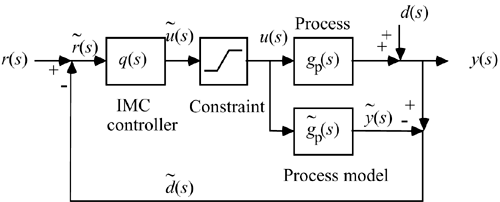
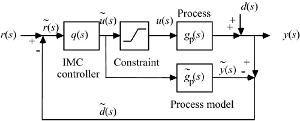

| [ Team LiB ] |
|
8.11 Manipulated Variable SaturationThe reader should note that if the actual manipulated variable signal is used by the model, then manipulated variable saturation is not a problem because the system becomes open-loop and the model prediction is the same as the process output (if there are no disturbances and the model is perfect). In conventional PID controllers, special precautions must be taken to prevent reset or integral windup from occurring when manipulated variables hit constraints. This phenomenon is discussed more fully in Chapter 11. The IMC block diagram for the case where the actual manipulated variable value that is implemented on the process is also used by the model is shown in Figure 8-20. Integral "wind-up" will not be a problem with this implementation. Figure 8-21 shows an IMC implementation where the manipulated variable value implemented on the process is constrained, while the process model uses the unconstrained value. Integral wind-up may be a problem in this case. It is very important when implementing IMC to use the actual manipulated input to the model in the control law. Figure 8-20. The actual manipulated variable value is "measured" and used by the process model. (Correct implementation) Figure 8-21. The manipulated variable value used by the process model is different from the value actually implemented on the process. (Undesirable implementation) |
| [ Team LiB ] |
|